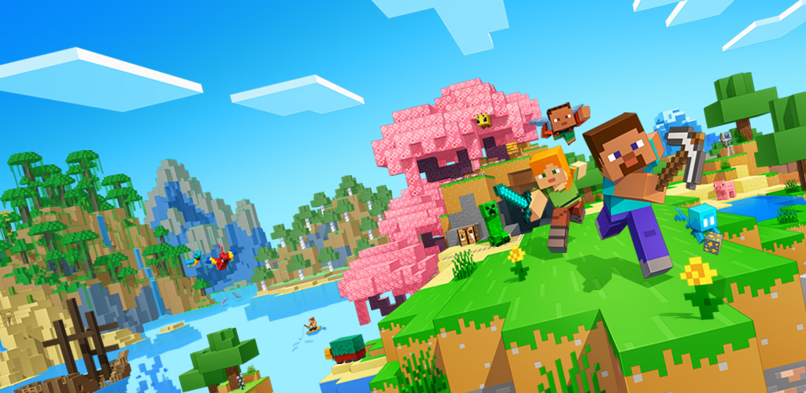

Em Minecraft, os jogadores exploram um mundo aberto tridimensional intencionalmente em blocos, pixelizado e gerado proceduralmente, podendo descobrir e extrair matérias-primas, ferramentas artesanais, construir estruturas ou terraplenagens e, dependendo do modo de jogo, podem combater inimigos controlados por computador, bem como cooperar ou competir contra outros jogadores no mesmo mundo. Esses modos incluem um modo sobrevivência, no qual o jogador precisa adquirir recursos para construir o mundo e se manter vivo, e um modo criativo, onde os jogadores têm recursos ilimitados. Em Java Edition, os jogadores podem modificar a jogabilidade com mods para criar novas mecânicas de itens, texturas, entre outros.
minecraft test 2

Minecraft é um jogo eletrônico sandbox de sobrevivência criado pelo desenvolvedor sueco Markus "Notch" Persson e posteriormente desenvolvido e publicado pela Mojang Studios, cuja propriedade intelectual foi obtida pela Microsoft em 2014. Lançado inicialmente em maio de 2009 como um projeto em desenvolvimento, seu lançamento completo ocorreu em 18 de novembro de 2011 para Microsoft Windows, macOS, Linux e alguns dispositivos móveis, sendo posteriormente relançado para uma ampla variedade de plataformas. É o jogo eletrônico mais vendido de todos os tempos, vendendo mais de 300 milhões de cópias em todas as plataformas até outubro de 2023, com mais de 140 milhões de jogadores ativos mensalmente.